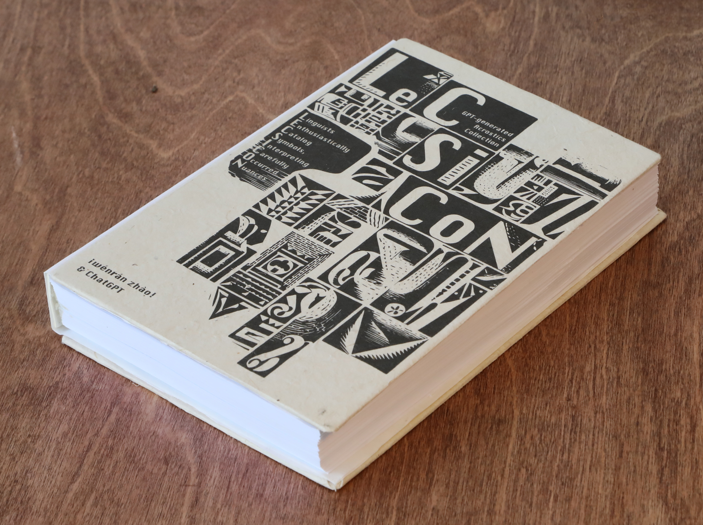
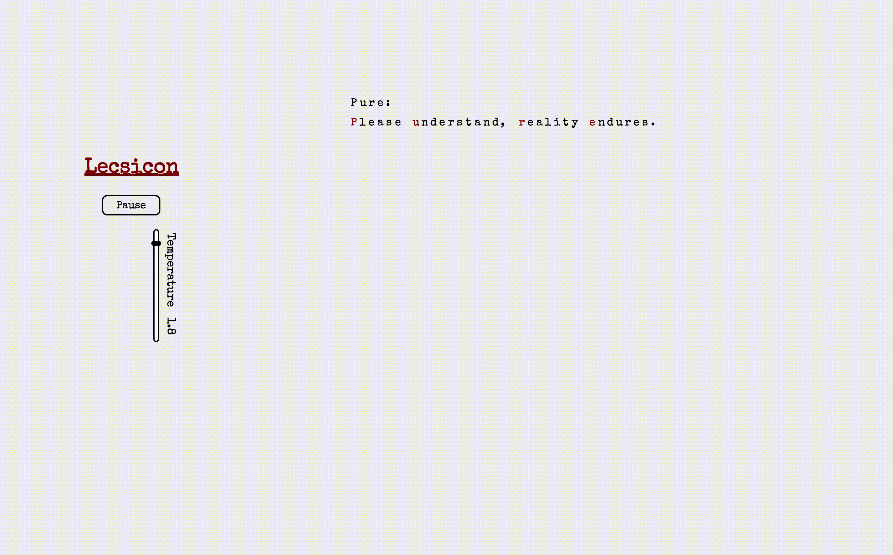
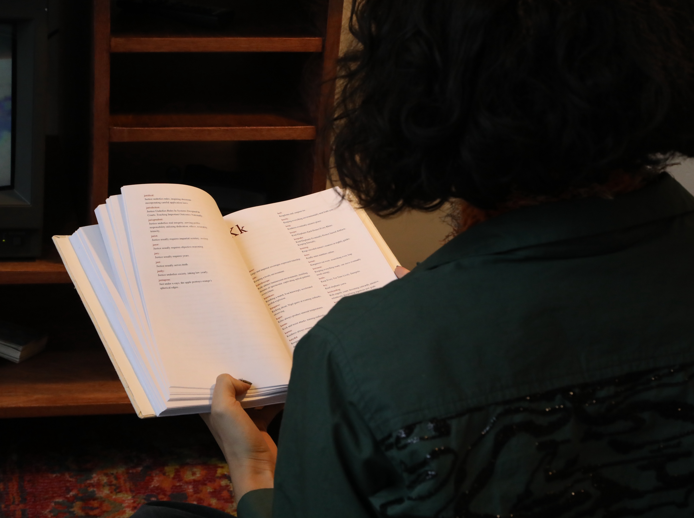
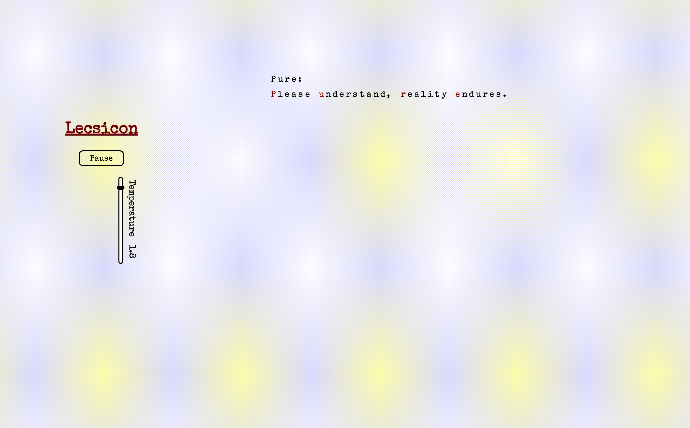
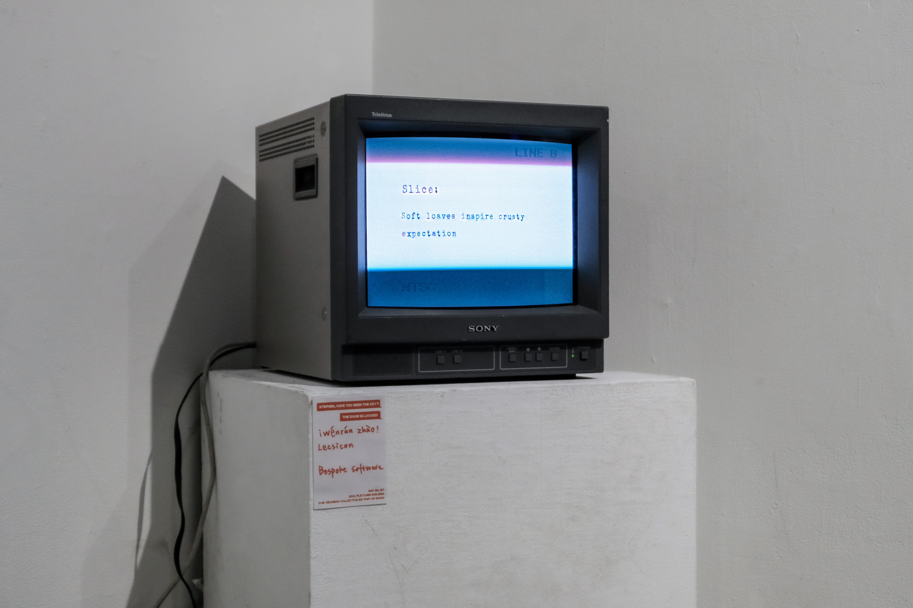
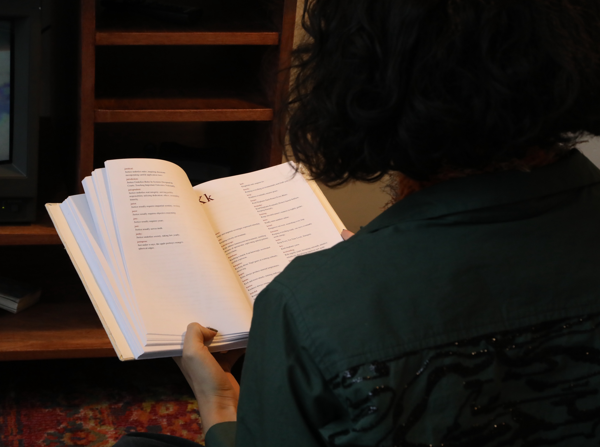
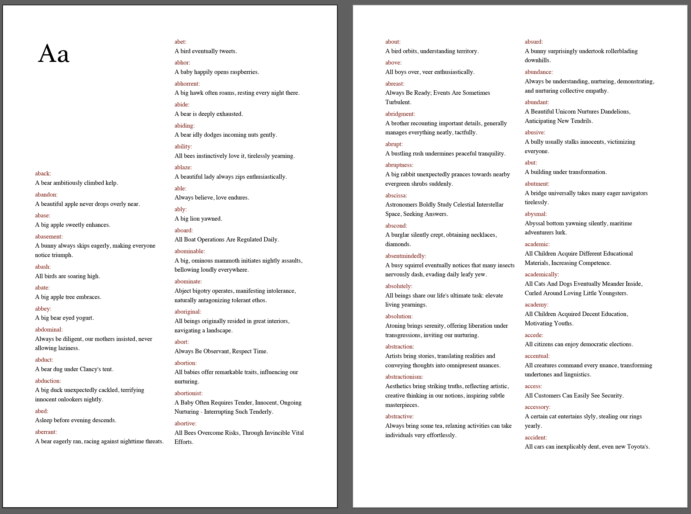
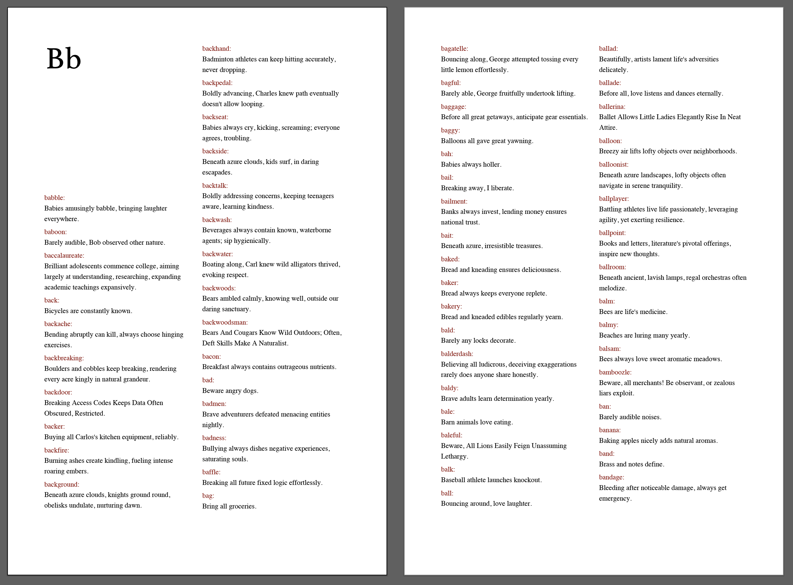
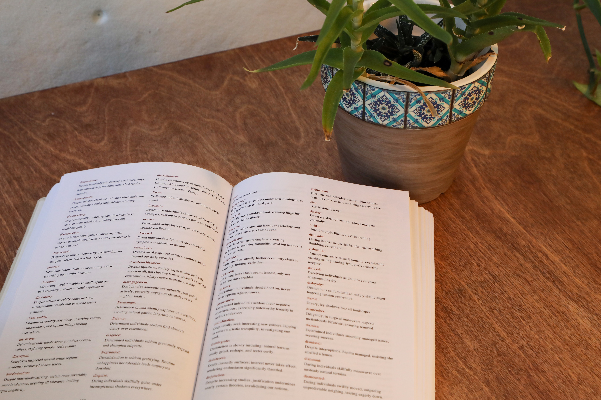

Back


Lecsicon is a collection of more than 24,000 acrostics generated by OpenAI's language model
GPT. Following a specific prompt, GP made a sentence with a series of words whose first letters
sequentially spelled out the given word. At a large scale, thi process gives rise to intriguing
behavioral patterns in th model. The resulting acrostics serve as a conduit between machine
comprehension and human interpretation, seeking to elicit gripping reflections on the nature of this
literary device and its role in meaning making.
For this project, I utilized a comprehensive collection of English words obtained from the English Lexicon Project and used the API for OpenAI’s GPT to generate acrostic sentences to each word. I provided GPT with a particular prompt and collected the generated acrostics into a browser-based interactive artwork, which was published in the Spring 2023 issue of the digital journal The New River. It was later on produced as a physical book/dictionary.

Here is my prompted for GPT 4: (You are, of course, welcome to grab it and play the game with your Chatbot.)
"I will give you a word. Make a sentence or phrase with a series of words whose first letters sequentially spell out my word. Your sentence doesn't have to have a strong semantic connection with the word I give you.
Now make a sentence for /WORD/. Your response should only contain the sentence you make. "
In response to my prompt, the model created acrostics in the form of sentences to each of the words provided. Thousands of word-sentence pairs compose this project. Including “Lecsicon: Linguists Enthusiastically Catalog Symbols, Interpreting Carefully Occurred Nuances.”

Behind the Scenes
The accuracy of GPT's responses, as usual, was not guaranteed. At times, one or two extra words slipped into the sentence. In extreme cases, the model rambled on and lost track of the initial instructions. Out of tens of thousands of attempts, with GPT 3.5, 30% of the responses strictly followed my rules; and with GPT 4, 60% of them.
The following is a selection of both successful and unsuccessful acrostics generated by GPT throughout the multiple iterations of the projects.
Unsuccessful examples include:
Successful examples include:
When one visits the Lecsicon web page, the successful word-sentence pairs are typed out letter-by-letter by a program. Beginning with a random word, the program scans the Lecsicon database, and strives to find a new word that has the smallest Levenshtein distance from the preceding word. For the printed book, the entries are sorted and rendered with python in a dictionary format.
Linguistic devices like acrostics captivate people like me because there is a hidden layer behind putting words together following certain mechanisms. In Lecsicon, the resulting sentences provide a greater context for the original words and reveal new perspectives. But I believe it is not a coincidence that GPT makes sentences that relate to the original word's meaning. Instead, it is a deliberate calculation and balancing process to capture words based on their relations to each other: a ghost wandering through a latent word vector space. Any word in such a space is nothing but the linguistic associations around it, based on statistical computation of the patterns of the text humans have produced. Sentences emerge from their context, and perhaps that's why some entries are intriguing and exciting, such as “snob: Surely, no one believes”, or “date: Dinner and theater experience.”
For this project, I utilized a comprehensive collection of English words obtained from the English Lexicon Project and used the API for OpenAI’s GPT to generate acrostic sentences to each word. I provided GPT with a particular prompt and collected the generated acrostics into a browser-based interactive artwork, which was published in the Spring 2023 issue of the digital journal The New River. It was later on produced as a physical book/dictionary.

Here is my prompted for GPT 4: (You are, of course, welcome to grab it and play the game with your Chatbot.)
"I will give you a word. Make a sentence or phrase with a series of words whose first letters sequentially spell out my word. Your sentence doesn't have to have a strong semantic connection with the word I give you.
Now make a sentence for /WORD/. Your response should only contain the sentence you make. "
In response to my prompt, the model created acrostics in the form of sentences to each of the words provided. Thousands of word-sentence pairs compose this project. Including “Lecsicon: Linguists Enthusiastically Catalog Symbols, Interpreting Carefully Occurred Nuances.”

Lecsicon as a video installation for exhibition “Do You Have the
Key?”
at Rhode Island School of Design in May 2023.
at Rhode Island School of Design in May 2023.

Lecsicon as a printed book.
Behind the Scenes
The accuracy of GPT's responses, as usual, was not guaranteed. At times, one or two extra words slipped into the sentence. In extreme cases, the model rambled on and lost track of the initial instructions. Out of tens of thousands of attempts, with GPT 3.5, 30% of the responses strictly followed my rules; and with GPT 4, 60% of them.
The following is a selection of both successful and unsuccessful acrostics generated by GPT throughout the multiple iterations of the projects.
Unsuccessful examples include:
- insomnia: I need some pills to sleep over insomnia.
-
jumbo: Josh usually needs bigger overalls.
-
white: We have icy hills to explore.
Successful examples include:
-
activity: All children thrive in varied, invigorating tasks year-round.
-
music: Many unexpected sounds indicate creativity.
-
gender: Generations endlessly nurture diverse, equal respect.
When one visits the Lecsicon web page, the successful word-sentence pairs are typed out letter-by-letter by a program. Beginning with a random word, the program scans the Lecsicon database, and strives to find a new word that has the smallest Levenshtein distance from the preceding word. For the printed book, the entries are sorted and rendered with python in a dictionary format.


Linguistic devices like acrostics captivate people like me because there is a hidden layer behind putting words together following certain mechanisms. In Lecsicon, the resulting sentences provide a greater context for the original words and reveal new perspectives. But I believe it is not a coincidence that GPT makes sentences that relate to the original word's meaning. Instead, it is a deliberate calculation and balancing process to capture words based on their relations to each other: a ghost wandering through a latent word vector space. Any word in such a space is nothing but the linguistic associations around it, based on statistical computation of the patterns of the text humans have produced. Sentences emerge from their context, and perhaps that's why some entries are intriguing and exciting, such as “snob: Surely, no one believes”, or “date: Dinner and theater experience.”
